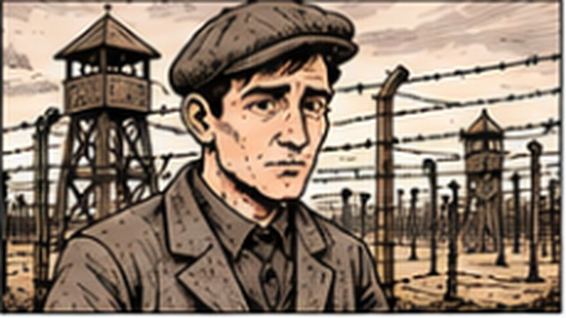

← Andrew Abeles · Home
All Service Comics
Biography and Legacy
Biography & Legacy — Examples
Because I Helped Others…
View project →

Vilmos Abeles
View project →
Memoirs
View project →
Binyomin the Bull
View project →
View the original Biography & Legacy page →
 Because I Helped Others…
Because I Helped Others… Memoirs
Memoirs Binyomin the Bull
Binyomin the Bull